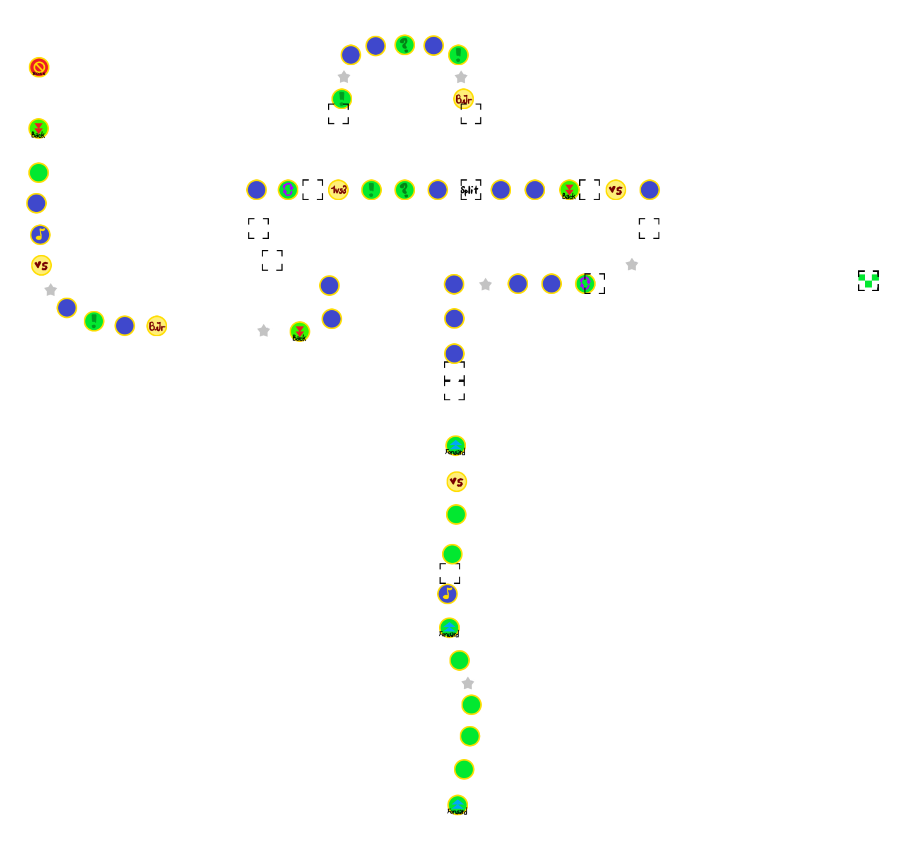
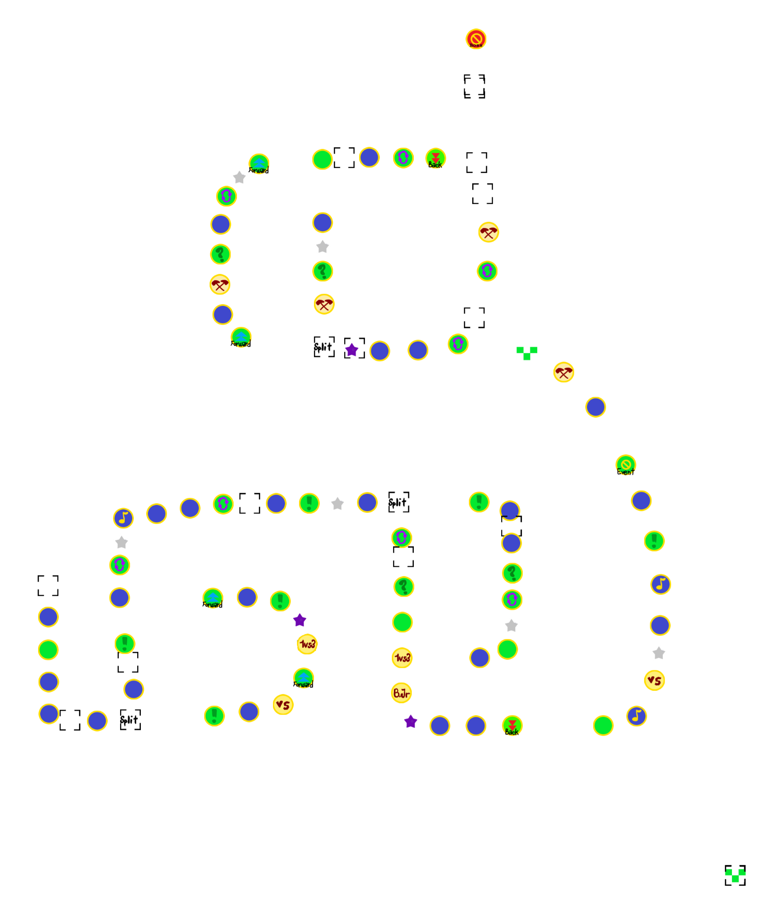

Boo's Horror Castle
Boo-be-trappin'
Board Layout
Lower floor:

Upper Floor:

Spaces count (all split paths)
Start: 1
Boss Space: 1
Dice Space: 44
Backward Space: 5
Lucky Space: 5
"Almost there" checkpoint: 2
Spin Space: 10
ministars spot: 13
miniztars spot: 3
Battle Space: 4
Mid-Boss Space: 1
1v2/3 Space: 3
Bowser Jr Minigame Space: 3
Split path confirmation: 4
Blank Space (Path guiding): 40
Shuffle Space: 10
Dash Space: 7
4v Minigame Space: 5
Happening Space: 6
Green Space: 12
Captain Event Space: 1
General Tips and strategy
- The board's gimmik is the Boo portraits that spawns Boo. Every turn the Boo would move 3 spaces, and if the Boo catches up with the captain (or if the captain catches up with the Boo), the captain loses half of their ministars.
- There are light rooms aling the path that a Boo cannot get to. It is, however, slower than taking the main path.
- This creates strategies to screw other players over.
- Happening spaces inside / outside light rooms will wrap you inside / outside the room, depending on where you are.
- When the vehicle goes outside the main castle, the Boo will be trapped inside and does not chase the players mow.
- However, if the vehicle is too slow that the Boo goes outside first, they will not be trapped inside the castle and will continue move 3 spaces every turn outside. Captains taht catches up with them will still loses half of their ministars.
- Generally, you want to create "Boo sandwiches" (a Boo in front of the car, and a Boo at the back of the car). The probability of players getting caught by a Boo is higher by having Boo sandwiches. (Be wary that you might get caught by Boo in this situation, too.)
-
Boo trapping strategies:
- 1st and 2nd Boo portrait: Not worth spending too much time strategising here as players will most likely have few ministars to lose. (which can be easily gain back)
-
3rd Boo: Not really a threat as you are about to go outside. The only thing that needs to be worried is the back space. (Even then, it is a ⅙ chance for regular dice roll, and you can avoid it with a 4-5-6 dice block)
Also not really worth spending time with it as it is still early game.
-
4th Boo: By spending time in the light room after the portrait, the Boo will be very close to the vehicle. Enter the light room if you land on the 2 minigame spaces to increase the chance that other players gets the Boo.
-
5th Boo: Same as the 4th Boo, enter the light room to increase the chance others getting caught by Boo, UNLESS you wanted to get the 6th Boo (See below)
-
6th Boo: Can be skipped by going into the light room. DO NOT enter the light room if the 4th Boo is still on the board to sandwich other players between these Boos, or that you will be landing on the happening space (which will teleport all players into the light room with the Boo still being activated, making a potential Boo sandwich.
-
7th and 8th Boo: The game automatically set up a Boo sandwich for all players with these 2 Boos. Beware of the backward spaces that may send you right into one of the Boo.
Captain Event
Scardy Rat Race